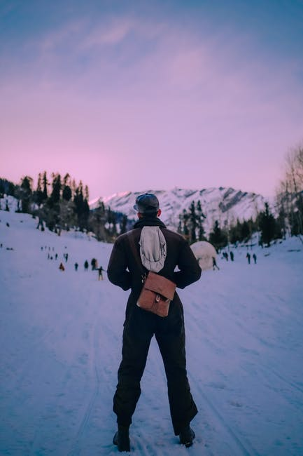
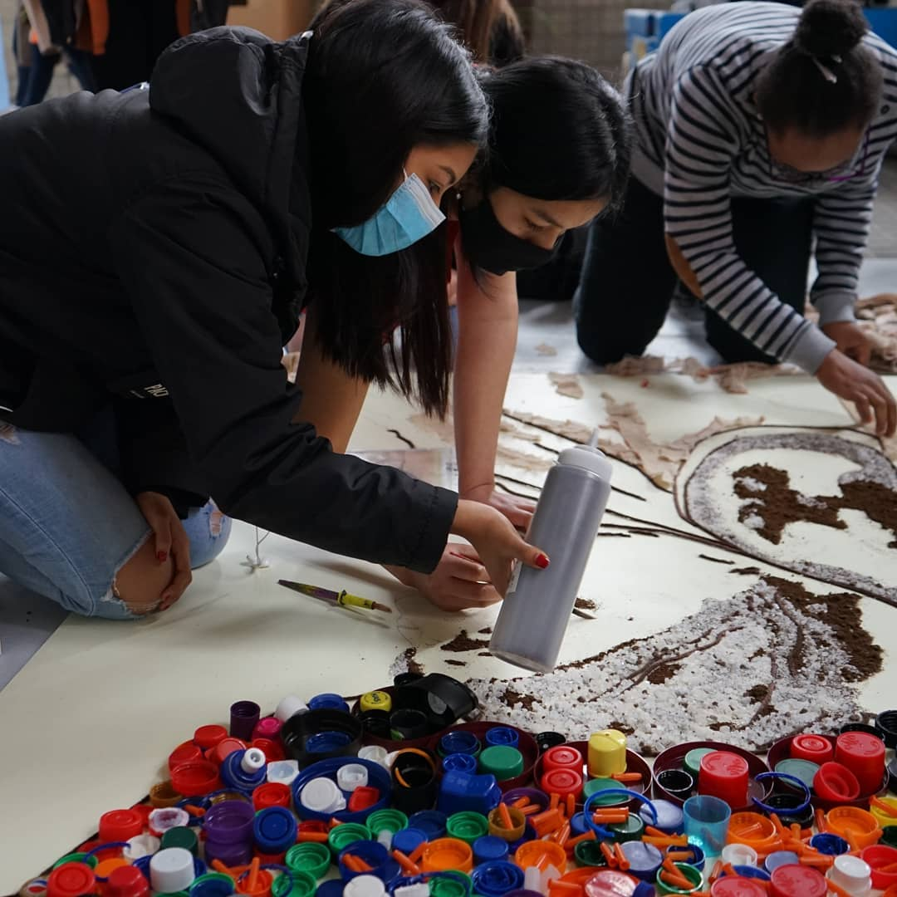

“Proponemos un Proyecto Educativo a largo plazo que debe empezar a desarrollarse cuanto antes, dando prioridad a las acciones más concretas y cercanas, ajustándose a las posibilidades y limitaciones que presentan los recursos naturales.”
Sagittis scelerisque nulla cursus in enim consectetur quam. Dictum urna sed consectetur neque tristique pellentesque. Blandit amet, sed aenean erat arcu morbi. Cursus faucibus nunc nisl netus morbi vel porttitor vitae ut. Amet vitae fames senectus vitae.
Sollicitudin tristique eros erat odio sed vitae, consequat turpis elementum. Lorem nibh vel, eget pretium arcu vitae. Eros eu viverra donec ut volutpat donec laoreet quam urna.
Rhoncus nisl, libero egestas diam fermentum dui. At quis tincidunt vel ultricies. Vulputate aliquet velit faucibus semper. Pellentesque in venenatis vestibulum consectetur nibh id. In id ut tempus egestas. Enim sit aliquam nec, a. Morbi enim fermentum lacus in. Viverra.
Tincidunt integer commodo, cursus etiam aliquam neque, et. Consectetur pretium in volutpat, diam. Montes, magna cursus nulla feugiat dignissim id lobortis amet. Laoreet sem est phasellus eu proin massa, lectus. Diam rutrum posuere donec ultricies non morbi. Mi a platea auctor mi.
CI Cuatrovientos es una sociedad cooperativa que posee plena capacidad sobre su estructura empresarial y contabiliza el 100% de sus emisiones atribuibles a las actividades sobre las que ejerce el control.
“Proponemos la participación de la comunidad educativa, a través de procesos y metodologías activas que desarrollen la reflexión, colaboración y responsabilidad que, junto con el asesoramiento técnico, contribuyan a la creación de hábitos de vida sostenibles.”
En Cuatrovientos nos hemos volcado con el proyecto #stopco2. El objetivo de este taller es conocer qué emisiones de CO2 ç enviamos a la atmósfera como instituto y ver cómo podemos reducirlas y compensarlas para ser un CENTRO NEUTRO EN EMISIONES.
En el centro nos encargarnos de que toda la energia que recivamos sea 100% renovable.
Instalacion de Placas solares,etc...
El alumnado de 1º de cada ciclo realizará un trabajo en el aula (jornada de trabajo) en el que desarrollen algún producto quecontribuya a las medidas propuestas en el Plan de reducción y compensación.
wfewfwefewf.
En dicha jornada hemos podido contar con la colaboración de:
Itziar Gómez López – Consejera de Desarrollo Rural y Medio
Ambiente del Gob. Navarra
Tomás Rodríguez Garraza – Director General de FP del Gob.
Navarra
Mikel Baztán – Técnico de Sostenibilidad y defensor del Medio
Ambiente
Luís Orús – Director del Centro de Referencia Nacional en
Energias Renovables y Eficiencia Energética
Entre las actividades que hicimos el alumnado y el docente, hemos hecho unos murales con las cartulinas de lo aprendido en la jornada del stop co2
Plantaremos arboles para la compensacion de emisiones
“Apostamos por desarrollar el pensamiento crítico para el análisis de la realidad que nos permita reducir y repensar las decisiones que tienen que ver con el consumo, para alargar la vida útil de lo que tenemos, para su reutilización y para su reciclaje.”